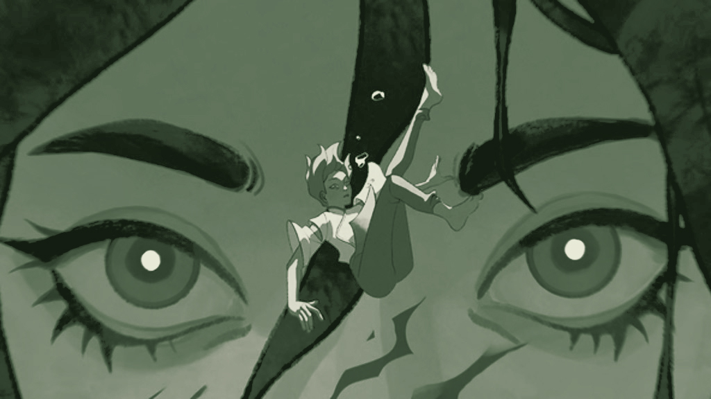
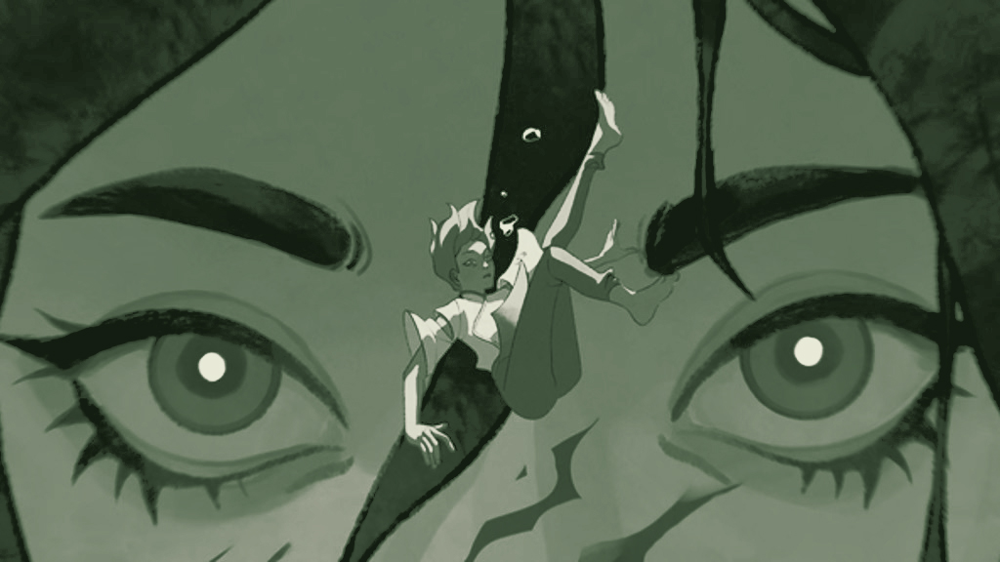

New Season of 'Invincible' has Fans Excited
After a jaw-dropping Season 2 finale, fans of Invincible are eagerly anticipating what’s next for the gritty animated superhero series. Based on Robert Kirkman’s comic series of the same name, Invincible has built a loyal following thanks to its compelling characters, emotional depth, and brutally intense action. With Season 3 officially airing, excitement is running high across social media and fan communities.
Weekly Spotlight: Shots from 'Spider-Man: Across The Spider-Verse'
Spider-Man: Across the Spider-Verse isn’t just a visual feast — it’s a landmark in animated filmmaking that pushes the boundaries of what the medium can do. Serving as a sequel to the critically acclaimed Into the Spider-Verse, this installment elevates the franchise with even more daring, genre-bending animation techniques that reflect the unique style and identity of each universe and character. Explore some fan-favorite frames from the film!
 

Rising Indie Animation: 'The Lovers' from Studio Heartbreak
Studio Heartbreak is making waves in the indie animation scene with The Lovers, a bold, genre-defying film that blends romance, mythology, and meaningful representation. At its core, The Lovers is a tender, tragic love story between two women — a rare and powerful portrayal in animation that places LGBTQ+ narratives at the forefront.
The Studio Ghibli AI Filter Controversy
A recent wave of AI-generated art has sparked controversy among animation fans, particularly those loyal to the beloved works of Studio Ghibli. At the center of the debate is an AI filter that mimics the signature hand-drawn style of the legendary Japanese animation studio, known for classics like Spirited Away, My Neighbor Totoro, and Princess Mononoke. While some users see the tool as a fun creative experiment, others view it as a disrespectful imitation of a deeply artisanal craft.
Animation Tips: Arcs of Movement
One of the foundational principles of animation — often overlooked by beginners — is the use of arcs of movement. Understanding and applying arcs can be the difference between stiff, robotic motion and fluid, lifelike animation. Whether you're working in 2D or 3D, arcs are essential to conveying natural movement and emotional expression.
High-Octane Animated Stories That Pack a Punch
Action in animation can be every bit as thrilling, visceral, and emotionally charged as its live-action counterpart — and often even more inventive. Whether it’s explosive fight scenes, strategic showdowns, or pulse-pounding chases, animated action has something for everyone. Here are ten must-watch titles that represent the best of what animated action has to offer.